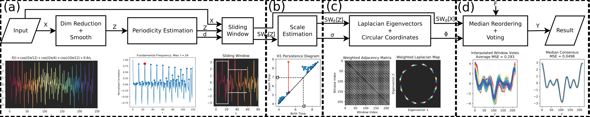
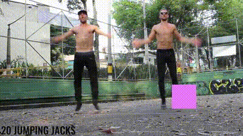
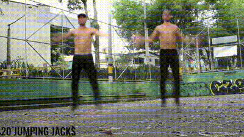
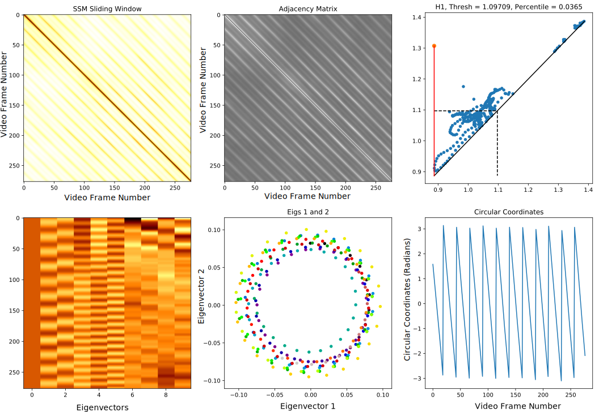
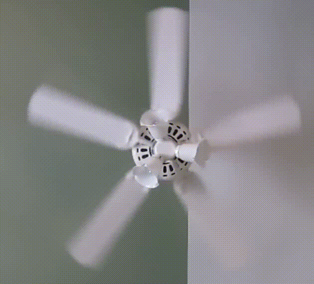
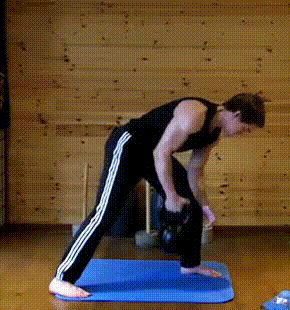
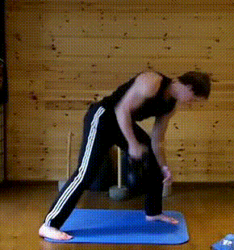

Topological Eulerian Synthesis of Slow Motion Periodic Videos
Christopher Tralie, Matthew Berger
Code
https://github.com/ctralie/SloMoLoopsPaper
Click here to view the paper associated with this workAbstract
We consider the problem of taking a video that is comprised of multiple periods of repetitive motion, and reordering the frames of the video into a single period, producing a detailed, single cycle video of motion. This problem is challenging, as such videos often contain noise, drift due to camera motion and from cycle to cycle, and irrelevant background motion/occlusions, and these factors can confound the relevant periodic motion we seek in the video. To address these issues in a simple and efficient manner, we introduce a tracking free Eulerian approach for synthesizing a single cycle of motion. Our approach is geometric: we treat each frame as a point in high-dimensional Euclidean space, and analyze the sliding window embedding formed by this sequence of points, which yields samples along a topological loop regardless of the type of periodic motion. We combine tools from topological data analysis and spectral geometric analysis to estimate the phase of each window, and we exploit the sliding window structure to robustly reorder frames. We show quantitative results that highlight the robustness of our technique to camera shake, noise, and occlusions, and qualitative results of single-cycle motion synthesis across a variety of scenarios.Supplementary Videos
This supplementary data contains an original set of videos and a corresponding set of "slow motion" videos that are the output of our pipeline. We also show the 3 synthesized ground truth videos we use in our quantitative analysis of circular coordinates, which have each been corrupted by a different type of noise (camera shake, Gaussian, occlusion).Jumping Jacks Example
A video of two men doing jumping jacks (creative commons, obtained from https://www.youtube.com/watch?v=sHRw7yIgNKE), with a square taking a random walk and occluding the video frames(JumpingJacks_Occlusions.avi)

Below is a slow motion template obtained by simply reordering the first frames of each window by the circular coordinates
(JumpingJacks_Occlusions_SimpleReordered.avi)

Below is a much cleaner slow motion template of the above video obtained via median reordering with our code
JumpingJacks_Occlusions_MedianReordered.avi

Below is a figure outputted from our code with more information about persistent homology and Laplacian circular coordinates for this example:

Fan Example
A video of a fan spinning quickly, creative commons, obtained from https://www.youtube.com/watch?v=ror_LhUh8kY(Fan_Original.avi)
Below is a clean slow motion template using an "F" of 4 (Fan_MedianReordered_Close4.avi)

Periodic Exercise Example
Below is a video of a man doing rows with a kettle ball (obtained from reference [37])(Exercise_Original.mp4)

Below is a slow motion template of the above video obtained from our code
(Exercise_MedianReordered.avi)

Magnified beating heart example
Below is a video from the phase-based Eulerian video amplification paper of a man's neck beating with his heart (obtained from reference [4])(ThroatMagnified_Original.avi)
Below is a slow motion template of the above video obtained from our code. We had to speed the video up for changes to be perceptible since the period involves so little motion
(ThroatMagnified_MedianReordered.avi_80FPS.avi)
Synthetic Examples
We generated these examples to quantitatively test our circular coordinates, since they are perfectly periodic and we have ground truth circular coordinates to go along with them.Below is our "simple periodic" video with occlusion type noise with a 50x50 box
(GroundTruth_Simple_OcclusionSquare50.avi)
Below is our "harmonic periodic" video with shake type noise which is 20x20 pixels in magnitude
(GroundTruth_Harmonic_Shake20x20.avi)
Below is a video of the "crowd periodic" video with per pixel IID Gaussian noise with sigma 0.5 (GroundTruth_Crowd_Noise0.5.avi)